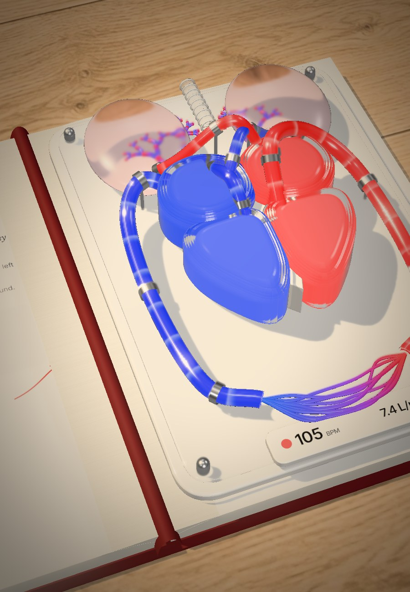
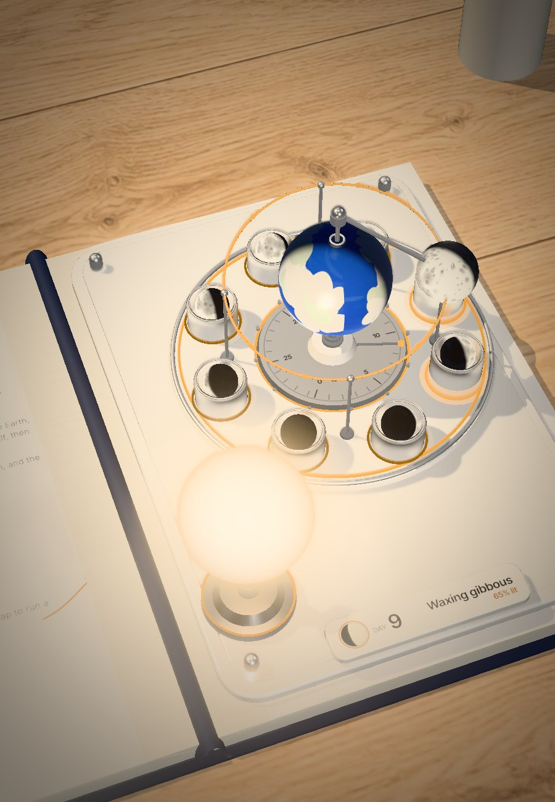
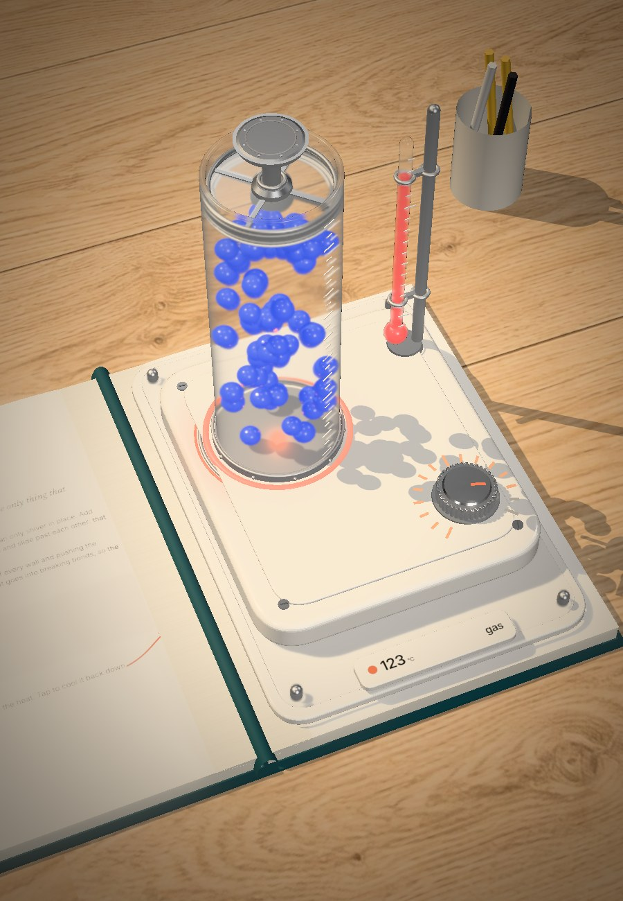
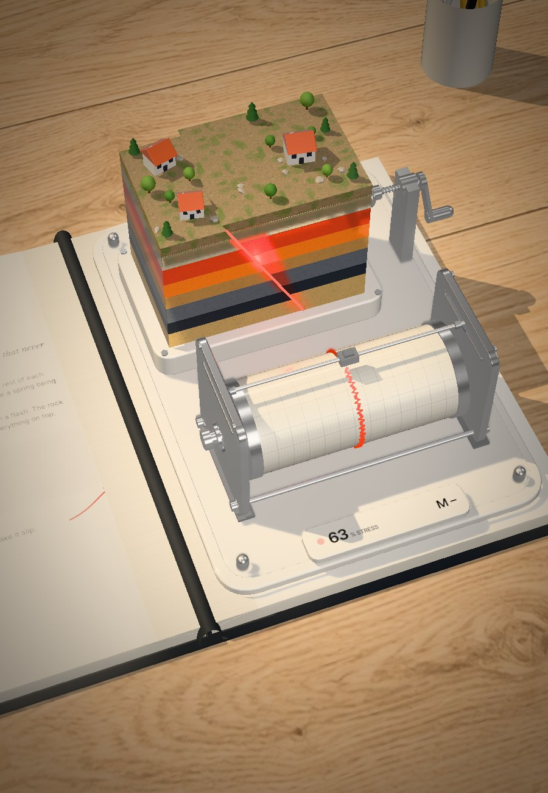

Open source · three.js
Glassbook
books you can touch
An open textbook on your desk. The left page teaches; out of the right page rises a working glass and ceramic model of the idea. Drag it, tap it, and watch the numbers follow.

Biology
The double pump
Set the pace and watch both sides of the heart push.

Astronomy
Why the Moon changes shape
Swing the Moon round the Earth and watch its phase.

Chemistry
Ice, water, steam
Turn up the heat until the particles fly.

Earth science
Where earthquakes come from
Wind up a locked fault until it slips.